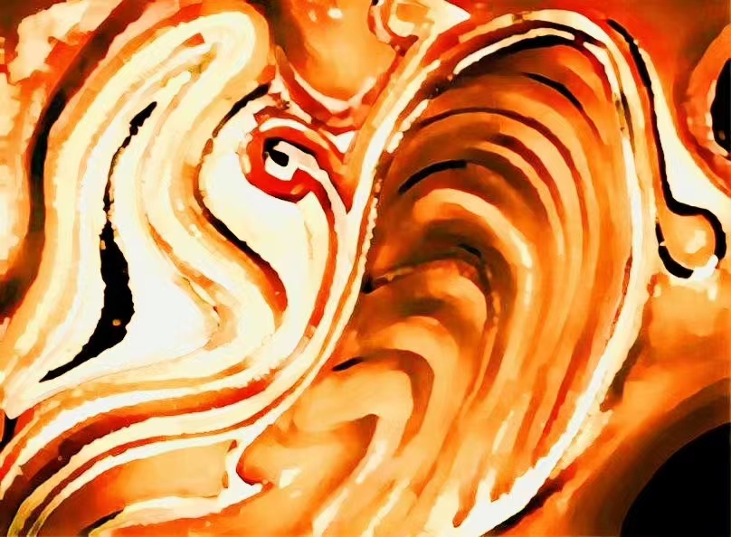
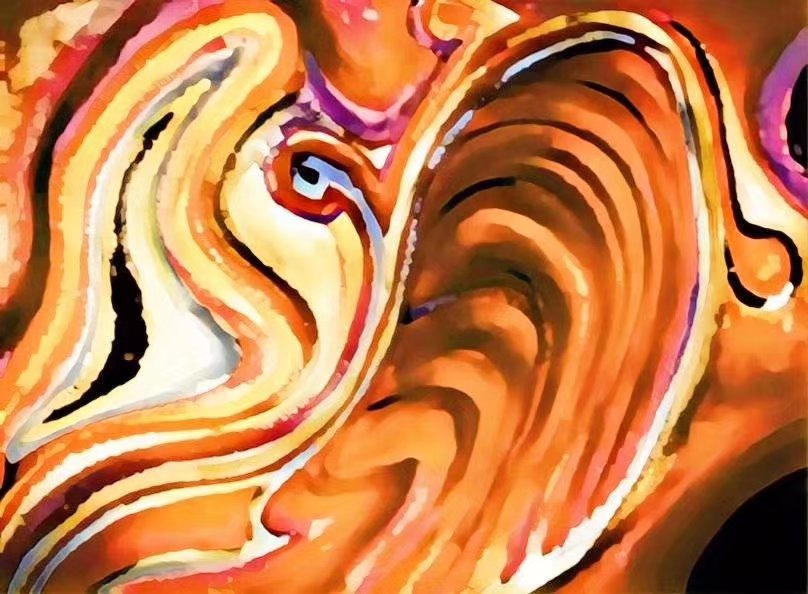
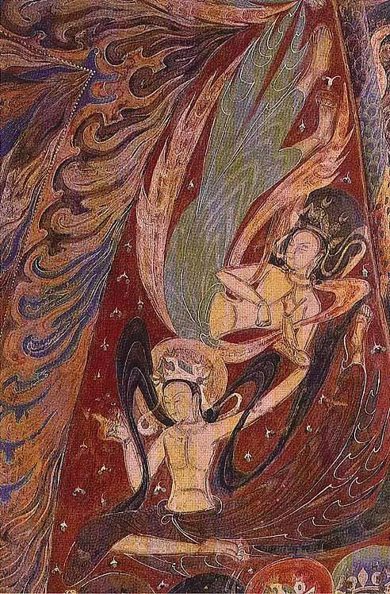

The Floating History: Mixed Media Digital Art Inspired by Dunhuang Murals
- Artist: Xuewen Zhao
- Instructor: Haiqiang Wang, Associate Professor
- Mixed Media: Watercolor on Paper, Processed with Photoshop, GIF Animated via AI Technology
- Production Time: October, 2017 (Watercolor and Digital Processing), November 2023 (AI Animation)
- Web Design and Development: To showcase this work, I designed this web page and then utilized AI-assisted programming techniques along with a modular development approach to enhance development efficiency.
Artwork Description:
This is an abstract painting I created named 'The Floating History' inspired by Dunhuang Murals. I first painted it on paper with watercolors, then processed it in Photoshop, after that, I used AI website LeiaPix Converter to animate it into a gif.
I aspired to evoke an art that prompts viewers to first think of the real, profound weight of history, rather than the sense of prosperity depicted by the Dunhuang Murals.
I chose the sleeves in the Dunhuang Murals as a prototype, which are floating and ethereal, and evoke a sense that draws those suffering towards an addiction to the fantasy of a happy afterlife. As a result, instead of those fancy senses created by the original painting, I created a different sensation that is harrowing, depressing, and makes people associate with the organs and blood. Besides that, I also tried to add a hint of hope and life, to make it embellish the tumultuous history.
Inspiration's Muse
It's an abstract painting with bold colors. The inspiration occurred to me while I was learning about The Dunhuang Murals in ancient China. It made me feel amazed that those sleeves showcased such an ethereal and elegant form on the cold and tough stone and mud walls. They seemed to have a still motion appearance through a thousand years.
The Dunhuang Murals are on an important hub of the Silk Road, which were created by monks and artisans from diverse cultural backgrounds in the early period when Buddhism entered China.
Crimson Epoch
The initial phase of the Dunhuang Murals' creation dates back to the Sixteen Kingdoms in China, a period that followed the conclusion of a hundred-year war which is the famous war called the Three Kingdoms. Moreover, this was followed by a tumultuous period of nearly three hundred years. The war ravaged the land completely, one in ten survived. In this brutal reality, a great number of women were treated as food. The sound of cry was louder than thunder but it could help nothing, so that the Buddha, the embodiment of compassion once entered China immediately gained a large number of believers.
Just as the old Chinese saying goes, 'In ignorance of suffering, one holds no faith in deities or Buddha.'
Those deities were painted high and above, overlooking all living beings in silence. The fancy scenes and Buddhist legends about reincarnation served as analgesic agents with anesthetic effects for those people suffering from war. The male deities mainly stand for power and the female deities mainly stand for mercy. They save everyone from suffering in the tales.
Floating Sleeves
Difference in sleeves is a significant distinction between the clothing of female and male deities in the Dunhuang Murals. The sleeves with a sense of movement is the feature of female deities. They always have smooth lines and emphasize the layering, distinguished from clothing of males in the Dunhuang Murals. Male deities' clothing is more concise with rough lines on it to emphasize the sense of power and majesty.
The sleeves seem to be still floating on the stone wall, just like the female deities are alive and moving, guiding people to an afterlife full of happiness, without war and pain.


Interwoven Sleeves of Past and Present
In my painting, I aimed to express a kind of fancy mixture of the contrasting qualities of the female deities' clothing, especially their sleeves, such as the heaviness of history and the lightness of the material, the roughness of carrier stone walls and the sense of dynamism, the length of the past and the vitality of those figures.
Warm Palette, Striking Contrasts
After choosing a warm palette primarily consisting of Sienna, Onyx, Champagne, and Apricot, I then made a bold decision. Because of the lack of vitality, I chose Periwinkle to be an embellishment on the middle top part, and Fuchsia for transition, which created a strong contrast between other colors. Gray and white were used to create a balance and visual aftertaste.
The left images are the original artworks, created with watercolors and Photoshop processing, without any AI processing. The top image features a warm palette, and the bottom showcasing color adjustments for enhanced vitality.
Abstraction of Life Symbols
In connection with the shape made of curves, the circle on the middle top with a point in it is like a bubble emerging out of the stone waves. Moreover, I'd like to create an abstraction of shape to express my thoughts on the female deities on the Dunhuang Murals. Therefore, the bubble and the curves connected to it also symbolize an alveoli connected to the lung, or an egg given birth by the uterus. To make this symbol clearer, I applied the Periwinkle to decorate the bubble, and drew a black dot in it to concretize the form of life. And the new life symbolized by the bubble was also involved in this torrent.
In my artwork, they rise above the vacuous forms of divine beings, evolving into authentic, flesh-and-blood women.

For reference, an example: Dunhuang Cave No. 285 - 'Fuxi, Nüwa and the Pantheon,' a mural from the Western Wei period.
As the deities soar through the sky, their sleeves ripple with the wind, creating a tangible impression of 'The divine garments flutter as if a breeze has come alive across the mural itself'.
Myth to Reality: Reflecting on History's Truth.
The alternating dark and light curves resemble ribs, or scars. Black is death, white is silence. The curves of the entire painting are crowded together, like a tortuous and endless suffering fate.In this way, I add another kind of live feeling to the female deities and let them showcase the real women suffering the war instead of the happiness afterlife tales. Blood surged along the curves I drew, slaps women's bodies, brings oxygen and new lives, and leads endless suffering. Fictional myths can’t save anyone; what is still floating is just memories of suffering.
Generally, I created this painting to take people's eyes back to the true tragic history from the whitewashed illusory prosperity and legends.
Contact Information
Artist:
- Email: oxsheron@gmail.com
Academic Advisor:
- Haiqiang Wang, Associate Professor, Department of Media and Communication, College of Humanities and Development Studies, China Agricultural University
- Email: 03144@cau.edu.cn
- Address: Beijing 100083, P.R. China
- Homepage: College of Humanities and Development Studies (COHD)
I would like to express my gratitude to Associate Professor Haiqiang Wang for his valuable guidance on color selection for this work.
Online Resource
For a virtual tour of Dunhuang Cave No. 285, please visit: e-Dunhuang. Please scroll to the bottom of the page to find the virtual tour feature.